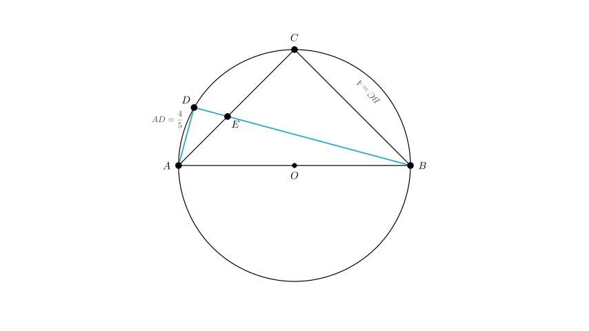
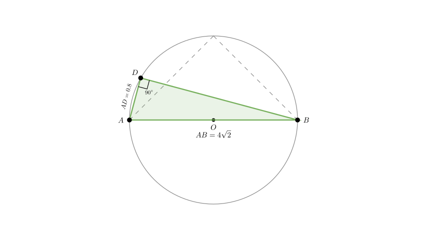
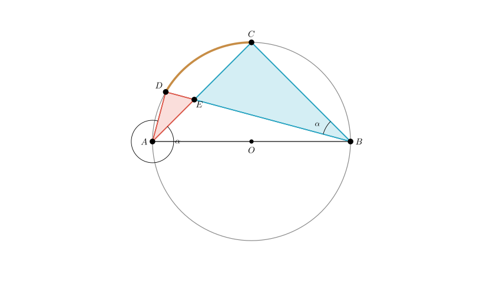

Problem Statement: As shown in the figure, circle $O$ is the circumcircle of the isosceles right triangle $ABC$. Point $D$ is a point on the arc $AC$. The line segment $BD$ intersects $AC$ at point $E$. If $BC = 4$ and $AD = \frac{4}{5}$, determine the length of $AE$.
Options: A. 3 B. 2 C. 1 D. 1.2
Solution Approach: 1. Identify the geometric properties of the isosceles right triangle inscribed in a circle (specifically that the hypotenuse $AB$ is the diameter). 2. Use the diameter property to establish that $\angle ADB = 90^\circ$. 3. Calculate the length of the chord $BD$ using the Pythagorean theorem. 4. Prove that $\triangle ADE$ is similar to $\triangle BCE$. 5. Use the ratio of similarity to set up an equation for $AE$ and solve.

Step 1: Analyze Geometric Properties
Since $\triangle ABC$ is an isosceles right triangle inscribed in circle $O$, and $\angle ACB$ must be $90^\circ$, the hypotenuse $AB$ passes through the center $O$. Thus, $AB$ is the diameter of the circle.
Given $BC = 4$ and the triangle is isosceles ($AC = BC$), we have: $$AC = 4$$
Using the Pythagorean theorem for $\triangle ABC$: $$AB = \sqrt{AC^2 + BC^2} = \sqrt{4^2 + 4^2} = \sqrt{32} = 4\sqrt{2}$$
Step 2: Calculate Length of BD
Since $AB$ is the diameter, the angle subtended by it at any point on the circle is a right angle. Therefore, $\angle ADB = 90^\circ$.
In the right-angled $\triangle ADB$: - Hypotenuse $AB = 4\sqrt{2}$ - Leg $AD = \frac{4}{5} = 0.8$
We can find $BD$ using the Pythagorean theorem: $$BD^2 = AB^2 - AD^2$$ $$BD^2 = (4\sqrt{2})^2 - (0.8)^2$$ $$BD^2 = 32 - 0.64 = 31.36$$ $$BD = \sqrt{31.36} = 5.6$$

Step 3: Establish Similarity
Now consider $\triangle ADE$ and $\triangle BCE$.
Therefore, $\angle ADE = \angle BCE$.
Angles on the Same Arc:
By Angle-Angle (AA) similarity criterion: $$\triangle ADE \sim \triangle BCE$$

Step 4: Solve for AE
From the similarity $\triangle ADE \sim \triangle BCE$, the ratio of corresponding sides is constant: $$\frac{AD}{BC} = \frac{AE}{BE} = \frac{DE}{CE}$$
Substitute the known values ($AD = 0.8$ and $BC = 4$): $$\text{Ratio } k = \frac{0.8}{4} = \frac{1}{5}$$
This gives us two relationships: 1. $AE = \frac{1}{5} BE \implies BE = 5 AE$ 2. $DE = \frac{1}{5} CE$
Let $AE = x$. Since $AC = 4$, we have $CE = 4 - x$. From the second relationship: $$DE = \frac{4 - x}{5}$$
We know that $BD = BE + DE$. We calculated $BD = 5.6$ earlier. Substitute $BE = 5x$ and $DE = \frac{4 - x}{5}$: $$5x + \frac{4 - x}{5} = 5.6$$
Multiply the entire equation by 5 to clear the denominator: $$25x + (4 - x) = 28$$ $$24x + 4 = 28$$ $$24x = 24$$ $$x = 1$$
Conclusion: The length of $AE$ is 1.
Verification: If $AE = 1$: - $CE = 3$ - $BE = 5(1) = 5$ - $DE = 3/5 = 0.6$ - Total length $BD = BE + DE = 5 + 0.6 = 5.6$. This matches our calculated $BD$. - Power of point $E$: $AE \cdot CE = 1 \cdot 3 = 3$. - $BE \cdot DE = 5 \cdot 0.6 = 3$. The values are consistent.
Final Answer: The length of $AE$ is 1. Matches Option C.